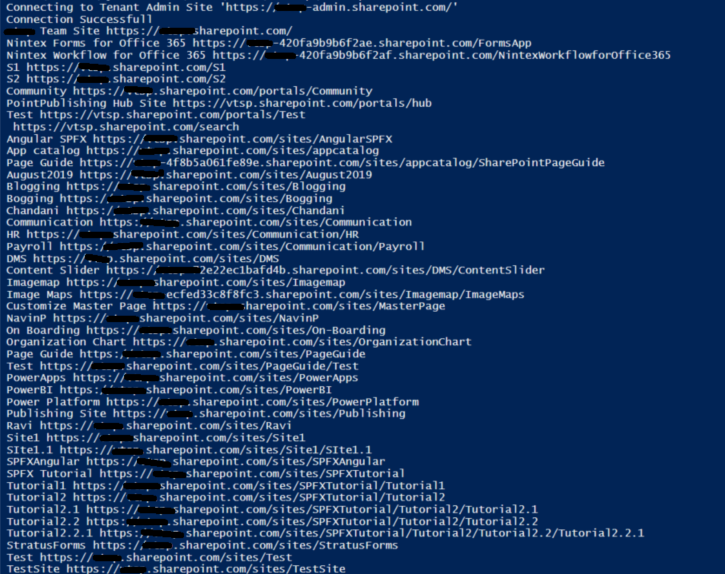

How to to get all site collections with their sub webs
Summary
Sometimes we have a business requirement to get site collections with all the sub-webs so we can achieve the solution easily using PnP Powershell.

Let's see step-by-step implementation
Implementation
Open Windows Powershell ISE Create a new file and write a script
Now we will see all the steps which we required to achieve the solution:
- We will initialize the admin site URL, username, and password in the global variables.
- Then we will create a Login function to connect the O365 SharePoint Admin site.
- Create a function to get all site collections and all the sub-webs
So in the end, our script will be like this
$SiteURL = "https://domain-admin.sharepoint.com/"
$UserName = "UserName@domain.onmicrosoft.com"
$Password = "********"
$SecureStringPwd = $Password | ConvertTo-SecureString -AsPlainText -Force
$Creds = New-Object System.Management.Automation.PSCredential -ArgumentList $UserName, $SecureStringPwd
Function Login {
[cmdletbinding()]
param([parameter(Mandatory = $true, ValueFromPipeline = $true)] $Creds)
Write-Host "Connecting to Tenant Admin Site '$($SiteURL)'"
Connect-PnPOnline -Url $SiteURL -Credentials $creds
Write-Host "Connection Successfull"
}
Function AllSiteCollAndSubWebs() {
Login($Creds)
$TenantSites = (Get-PnPTenantSite) | Select Title, Url
ForEach ( $TenantSite in $TenantSites) {
Connect-PnPOnline -Url $TenantSite.Url -Credentials $Creds
Write-Host $TenantSite.Title $TenantSite.Url
$subwebs = Get-PnPSubWebs -Recurse | Select Title, Url
foreach ($subweb in $subwebs) {
Connect-PNPonline -Url $subweb.Url -Credentials $Creds
Write-Host $subweb.Title $subweb.Url
}
}
}
AllSiteCollAndSubWebs
Check out the PnP PowerShell to learn more at: https://aka.ms/pnp/powershell
Source Credit
Sample first appeared on How to to get all site collections with their sub webs using PnP PowerShell? | Microsoft 365 PnP Blog
Contributors
| Author(s) |
|---|
| Chandani Prajapati |
Disclaimer
THESE SAMPLES ARE PROVIDED AS IS WITHOUT WARRANTY OF ANY KIND, EITHER EXPRESS OR IMPLIED, INCLUDING ANY IMPLIED WARRANTIES OF FITNESS FOR A PARTICULAR PURPOSE, MERCHANTABILITY, OR NON-INFRINGEMENT.